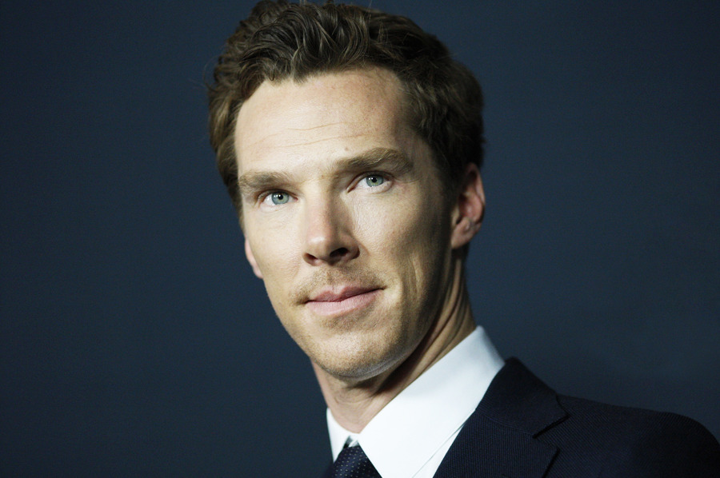

 Benedict Timothy Carlton Cumberbactch was born in London on July 19, 1976. He is an actor like his mother Wanda Ventham and his father Timothy Carlton .He was educated at Brambletye school and Harrow School. As a student, he took part in school plays such as; William Shakespeare's A Midsummer Night's Dream. Benedict Cumberbatch graduated from the University of Manchester and earned master's deegre in classical acting from the London Academy of Music and Dramatic Art.
Cumberbatch has worked in theatre, television, film and radio. He first performed at the Open Air Theatre, Regent's Park in Shakespearean productions. Over the next few years, he continued performing in London theatres, often in classics such as Henrik Ibsen's Hedda Gabler (2005; nominated for a Laurence Olivier Award for best supporting actor) and Eugène Ionesco's Rhinoceros (2007). He became a familiar face on television as well, playing supporting roles in series such as Tipping the Velvet and Silent Witness (both 2002), Fortysomething (2003),and To the Ends of the Earth (2005). In 2005 he was nominated for a BAFTA TV Award for best actor for his portrayal of physicist Stephen Hawking in the BBC television biopic Hawking (2004). Cumberbatch's first major film role was in Amazing Grace (2006), a historical treatment of politician William Wilberforce's antislavery efforts, in which Cumberbatch played Prime Minister William Pitt the Younger.
At the start of his career, he used his father’s stage name, Carlton, but, encouraged by a colleague, he began to appear under the family’s original, unusual surname in order to attract greater professional attention. Cumberbatch’s first work in the professional theatre was primarily Shakespearean, beginning with two repertory seasons with the New Shakespeare Company in London’s Regent Park in 2001 and 2002. Over the next few years, he continued performing in London theatres, often in classics such as Henrik Ibsen’s Hedda Gabler (2005; nominated for a Laurence Olivier Award for best supporting actor) and Eugène Ionesco’s Rhinoceros (2007). He became a familiar face on television as well, playing supporting roles in series such as Tipping the Velvet and Silent Witness (both 2002), Fortysomething (2003), and To the Ends of the Earth (2005). In 2005 he was nominated for a BAFTA TV Award for best actor for his portrayal of physicist Stephen Hawking in the BBC television biopic Hawking (2004). Cumberbatch’s first major film role was in Amazing Grace (2006), a historical treatment of politician William Wilberforce’s antislavery efforts, in which Cumberbatch played Prime Minister William Pitt the Younger.
In 2010 he broke through to far greater popularity at home and abroad as Sherlock Holmes in the BBC television series Sherlock, based on the stories of Sir Arthur Conan Doyle. The adaptation placed the characters of the classic Victorian-era tales in 21st-century London, and viewers’ imaginations were captured by its contemporary Holmes, who used nicotine patches (a nod to Conan Doyle’s pipe-smoking Holmes) and was a self-described “high-functioning sociopath.” Cumberbatch remained in the public eye with subsequent seasons of Sherlock. In 2014 his performance in a episode of the series’ third season won him an Emmy Award for outstanding actor in a miniseries or movie.
Cumberbatch starred in the 2011 Royal National Theatre adaptation of Mary Shelley’s Frankenstein, in which he alternated with actor Jonny Lee Miller in the roles of Victor Frankenstein and his creature. He earned rave reviews for his work and won several major theatrical awards, including the 2012 Olivier Award in Britain. He rounded out 2011 with roles in two high-profile films, Steven Spielberg’s War Horse and a big-screen adaptation of author John le Carré’s Tinker, Tailor, Soldier, Spy. Cumberbatch achieved a new level of fame as the villain Khan in the Hollywood blockbuster Star Trek into Darkness (2013).
Cumberbatch played Wikileaks founder Julian Assange in The Fifth Estate (2013) and a well-intentioned slave owner in 12 Years a Slave (2013), an adaptation of Solomon Northup’s narrative (1853) of his life in captivity. He then lent his posh growl to the computer-animated dragon Smaug in The Hobbit: The Desolation of Smaug (2013), the second installment in director Peter Jackson’s film trilogy based on J.R.R. Tolkien’s novel. He played against type as a hapless young man in August: Osage County (2013), adapted from the play by Tracy Letts.
In 2014 Cumberbatch starred as mathematician and logician Alan Turing in The Imitation Game, voiced an animated wolf in the comedy Penguins of Madagascar, and reprised his role as Smaug in The Hobbit: The Battle of the Five Armies. His turn as Turing earned him an Academy Award nomination for best actor. Cumberbatch returned to the stage as the titular Danish prince in a 2015 production of Hamlet. The entire run of the show, produced at the Barbican Centre, sold out a year in advance of the show’s opening. Also in 2015 he appeared in the film Black Mass as a state senator (and brother of gangster Whitey Bulger). The following year he starred in Doctor Strange, portraying a Marvel Comics superhero.
Cumberbatch dated Olivia Poulet on and off for many years before calling it quits for good in 2011. The pair had met at the University of Manchester.
In November 2014, Cumberbatch became engaged to director Sophie Hunter. The under-the-radar and understated announcement ran in England’s Times newspaper. The couple tied the knot on February 14, 2015, on the Isle of Wight and welcomed their first child, son Christopher Carlton, that June.
http://www.benedictcumberbatch.co.uk/biography/
https://www.biography.com/people/benedict-cumberbatch-21117745?_escaped_fragment